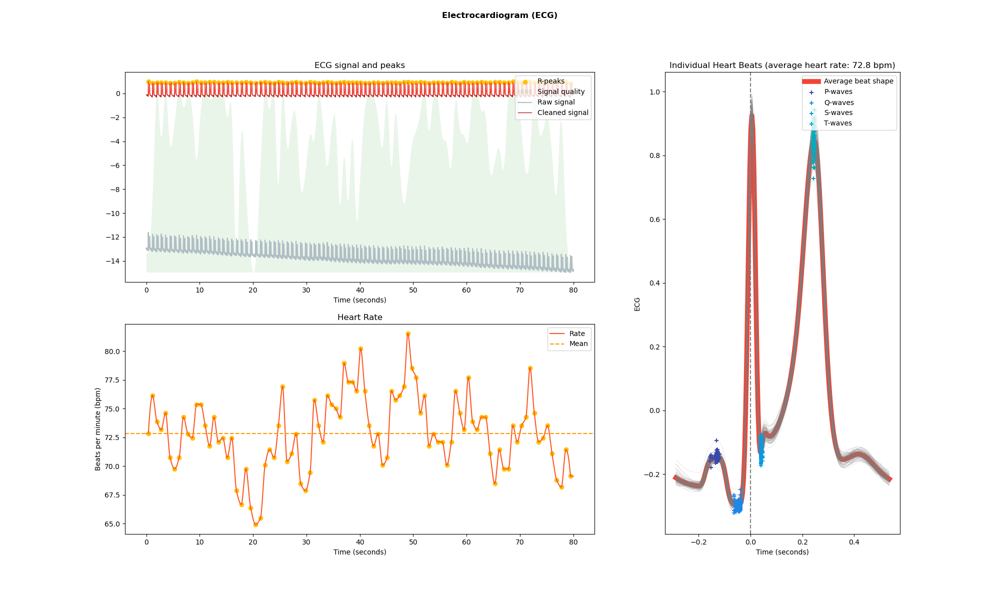
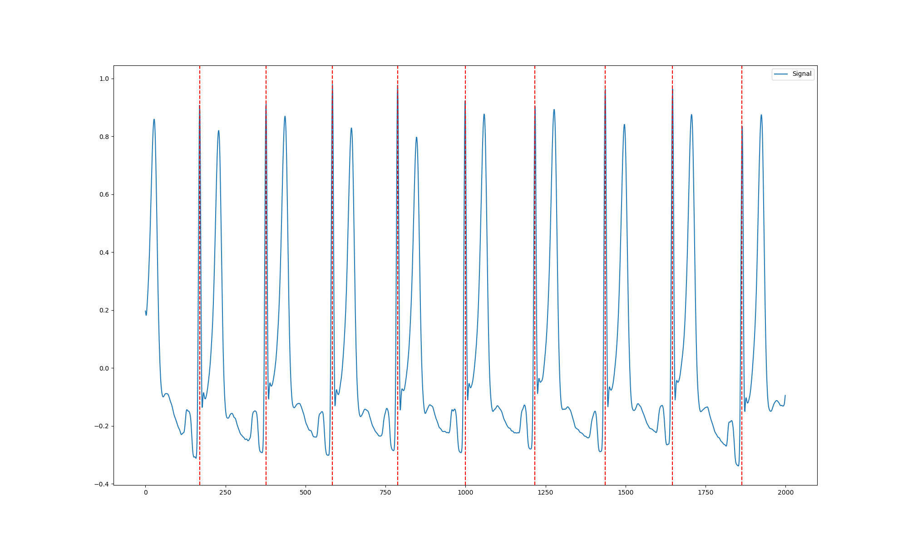
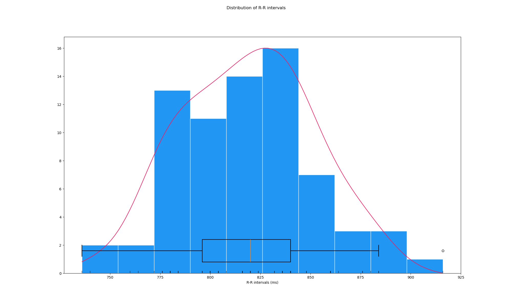

ECG Analysis
Data acquisition
We used two medical adhesive single-use electrodes to record the ECG. One electrode was placed on the left mastoid bone, whereas the second electrode was placed close to the heart on our volunteer’s chest. Using
Explore Desktop,
we recorded data for 5 minutes in a resting state, where the participant sat down. Data were saved in *.bdf format (European data format in 24 bit resolution).
ECG analysis
Software preparation
First, we prepare a conda virutal python environment, to house our project.
-
Create a virtual python environment using conda:
## conda create -n myenv python=3.10 -
Create a virtual python environment using conda:
## conda activate myenv -
Install the required packages:
## conda install neurokit2 pandas numpy matplotlib pyedflib
We then load the required packages in python and define a function to convert the .bdf file to a numpy array.
import neurokit2 as nk
import numpy as np
import matplotlib.pyplot as plt
import pyedflib
def edf_to_arr(edf_path):
f = pyedflib.EdfReader(edf_path)
n = f.signals_in_file
signal_labels = f.getSignalLabels()
sigbufs = np.zeros((n, f.getNSamples()[0]))
for i in np.arange(n):
sigbufs[i, :] = f.readSignal(i)
return sigbufsNext up, we load the edf file and convert it to the neurokit file format. We also take a subset of the data, to remove noisy data at the beginning of the recording period. Inspecting the info object, we can see that neurokit automatically detected peaks in the ECG signal.
data = edf_to_arr("wiki-ECG-resting_ExG.bdf") # read in bdf file
data = data[1] # channel 1 holds ECG data
data *= 1e-3 # scale uV to mV for ECG analysis in neurokit
ecg_signals, info = nk.ecg_process(data[5000:25000], sampling_rate=250) # take a subset from the middle of recording and read into neurokitThe peaks and cleaned ECG signal can be accessed using square bracket notation.
rpeaks = info["ECG_R_Peaks"]
cleaned_ecg = ecg_signals["ECG_Clean"]A plethora of heart rate variability features can be extrated from the ecg signals.
intervalrelated = nk.ecg_intervalrelated(ecg_signals)
intervalrelated.iloc[0,1:83]HRV_MeanNN [[204.81944444444446]]
HRV_SDNN [[8.914818157741777]]
HRV_SDANN1 [[nan]]
HRV_SDNNI1 [[nan]]
HRV_SDANN2 [[nan]]
...
HRV_RCMSEn [[0.7611306094308559]]
HRV_CD [[2.0228390744800744]]
HRV_HFD [[1.7543219260453518]]
HRV_KFD [[2.1402217265672414]]
HRV_LZC [[1.1140142363715286]]
Name: 0, Length: 82, dtype: object
----------------------------------Visualisation
From here on, neurokit provides us with various functions to visualize data, compute relevant ECG metrics, and find peaks and waves of the ECG. The first visualization shows heart rate and beat shapes of the resting state ECG (Figure 1).
nk.ecg_plot(ecg_signals, info)
fig = plt.gcf()
fig.set_size_inches(20, 12, forward=True)
fig.savefig("resting_ecg.png")
Figure 1. ECG signal over time (top left), heart rate over time (bottom left), and average heart beat shape overlaid with individual heart beats and annotations of the P-, Q-, S-, and T- waves (right).
Next up, we look at the R-peaks of a smaller section of the data.
ecg_signals, info = nk.ecg_process(data[18000:20000] , sampling_rate=250) # take a subset from the middle of recording and apply neurokit
rpeaks = info["ECG_R_Peaks"]
cleaned_ecg = ecg_signals["ECG_Clean"]
plot = nk.events_plot(rpeaks, cleaned_ecg[0:cleaned_ecg.shape[0]])
fig = plt.gcf()
fig.set_size_inches(20, 12, forward=True)
fig.savefig("resting_rpeaks.png")
Figure 1. R-peaks of the ECG.
Lastly, we can visualise the distribution of the R-R intervals, yielding a measure of heart rate variability.
peaks, info = nk.ecg_peaks(data[5000:25000], sampling_rate=250)
hrv_time = nk.hrv_time(peaks, sampling_rate=250, show=True)
hrv_time
fig = plt.gcf()
fig.set_size_inches(20, 12, forward=True)
fig.savefig("sv_ecg_time.png")
Figure 1. Distribution of R-R intervals (heart rate variability).
Closing words
The above analyses are just a glimpse at the wide range of ECG analyses that can be achieved with neurokit. Mentalab’s Explore amplifier is ideally suited to record biosignals like ECG where it can play to its strength of low weight and size. Importantly, Mentalab Explore can record several ExG modalities at the same time, allowing for synchronous recording of ECG, EMG, EEG and more. For instance, Friman et al. (2022) used Mentalab Explore to record ECG and EMG at the same time in a study evaluating heart rate accuracy of smartwatches [2]. See our selected publications for more inspiration. For more information or support, do not hesitate to get in contact at: [support@mentalab.com(mailto:support@mentalab.com)]
References
-
[1] Makowski D, Pham T, Lau ZJ, et al. NeuroKit2: A Python toolbox for neurophysiological signal processing. Behavior Research Methods. 2021;53(4):1689–1696. https://doi.org/10.3758/s13428-020-01516-y
-
[2] Friman S, Vehkaoja A, Perez-Macias JM. The Use of Wrist EMG Increases the PPG Heart Rate Accuracy in Smartwatches. In: 2022 IEEE Sensors. IEEE; 2022. https://doi.org/10.1109/JSEN.2022.3219297